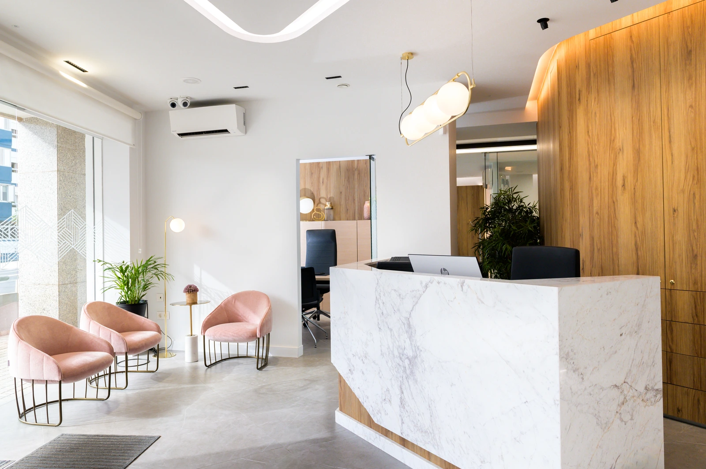
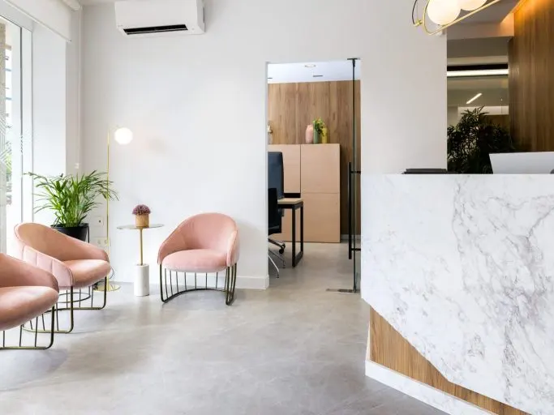
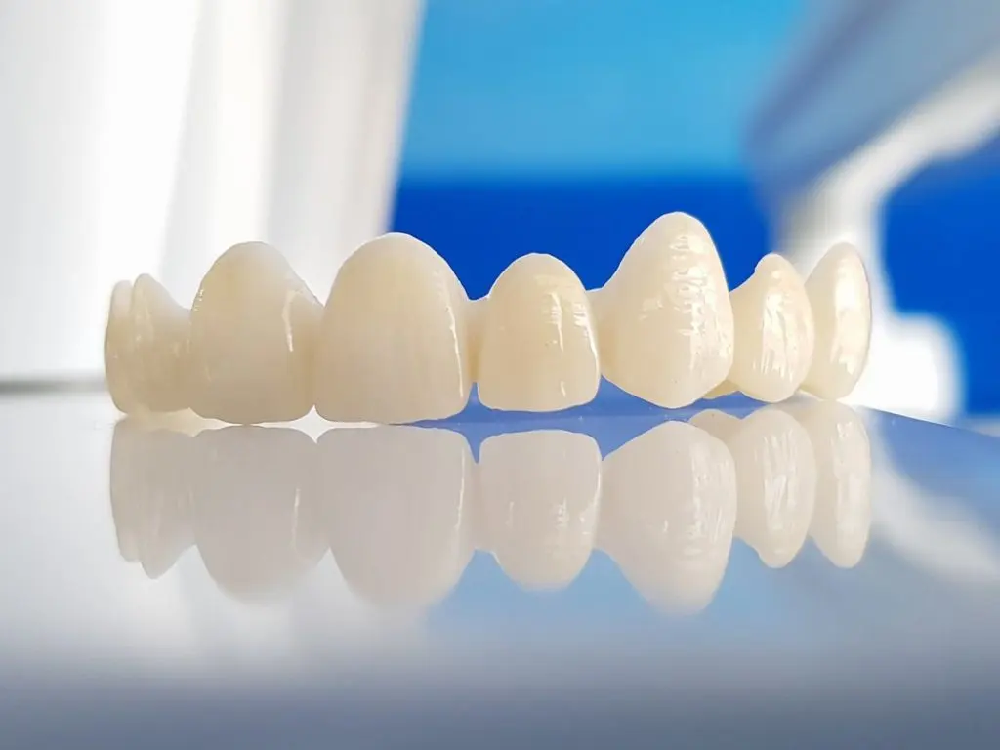
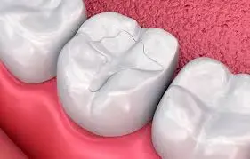
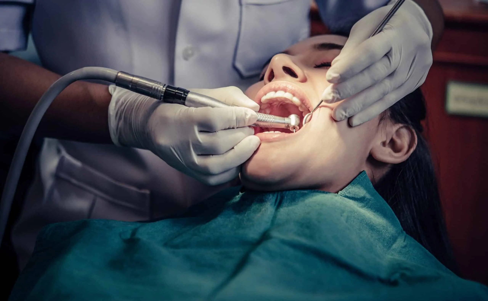

01
01Tratamientos dentales
Somos tu dentista de confianza en Santa Cruz de Tenerife
Ven a conocernos y lo comprobarás. En Clínica Dental Solymar Cabrera realizamos los tratamientos necesarios para cuidar la salud bucodental de nuestros pacientes, recuperar la funcionalidad y mejorar la estética de la sonrisa.
Tratamientos odontológicos habituales
La odontología se encarga de las dolencias de la cavidad oral. Nuestro centro abarca la mayoría de especialidades odontológicas, destacando especialmente la implantología, la ortodoncia, la estética dental, la odontología general, la endodoncia, la periodoncia y la rehabilitación protésica.
01 02
02Ortodoncia invisible
Alineadores transparentes para corregir la sonrisa de forma discreta.
Más información →
03Ortodoncia convencional
Brackets para mejorar la mordida, la alineación dental y la estética.
Más información → 04
04
05Odontología general
Revisiones, limpiezas, empastes, caries y cuidado bucodental diario.
Más información → 06
06 07
07 08
08Prótesis implantológica
Prótesis fija sobre implantes para recuperar funcionalidad y estética.
Más información →
09 10
10Diseño de sonrisa
Tratamientos estéticos para mejorar la forma, color y armonía dental.
Más información →
11
12¿Necesitas un tratamiento personalizado?
Cada sonrisa es diferente. Si tienes dudas sobre qué tratamiento necesitas, contacta con nuestro equipo y te orientaremos de forma cercana y profesional.